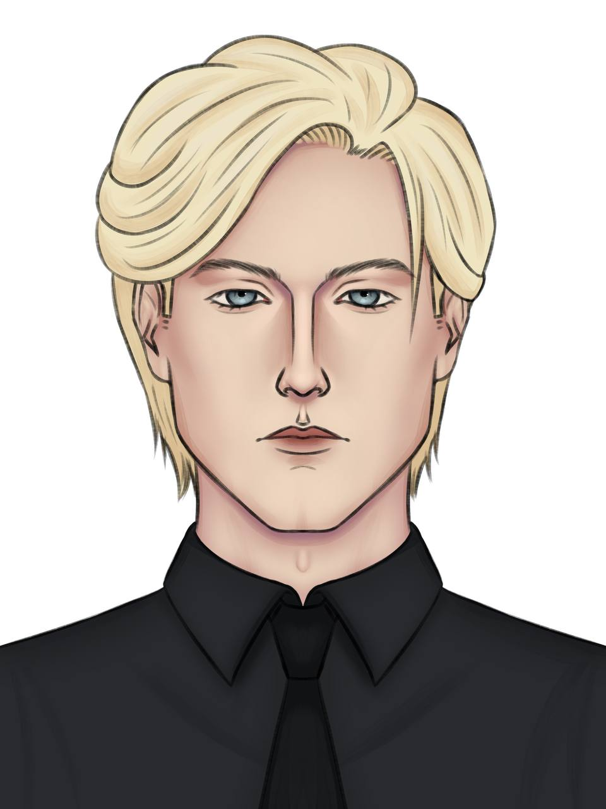
Ліам
Елегантний та стриманий молодий чоловік, який вміє зберігати внутрішню спокійність навіть у найважчих ситуаціях.
Катіє малює!
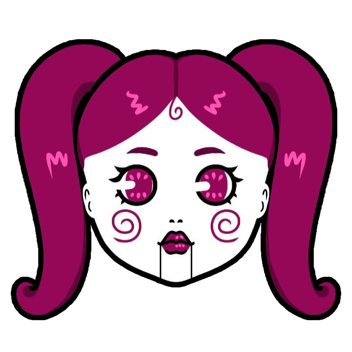
Привіт! Я Катя, або ж Satjiara — людина, у голові якої живе трохи більше ідей, ніж вистачає часу намалювати. Люблю створювати персонажів, експериментувати з малюванням та перетворювати хаотичні думки на щось візуальне.
Мій творчий шлях почався з малювання городів моркви. Хто б міг подумати, що від маленьких морквяних грядок я дійду до створення власних персонажів, яких зараз у мене вже близько десятка. А двоє з них настільки дорогі моєму серцю, що тепер назавжди залишаться зі мною у вигляді татуювання.
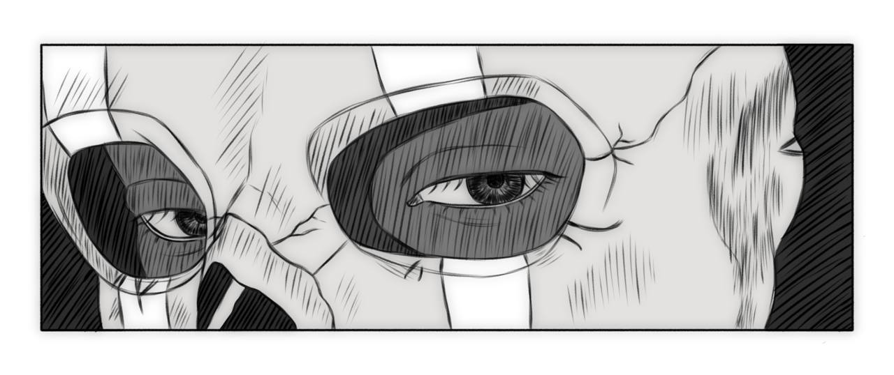
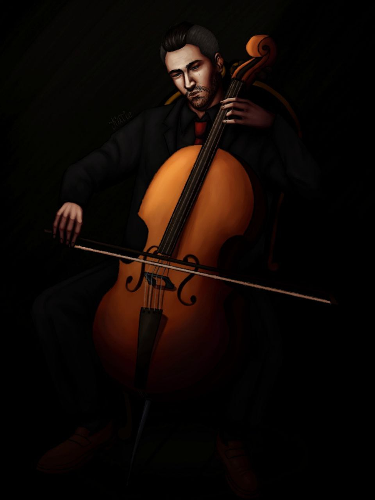
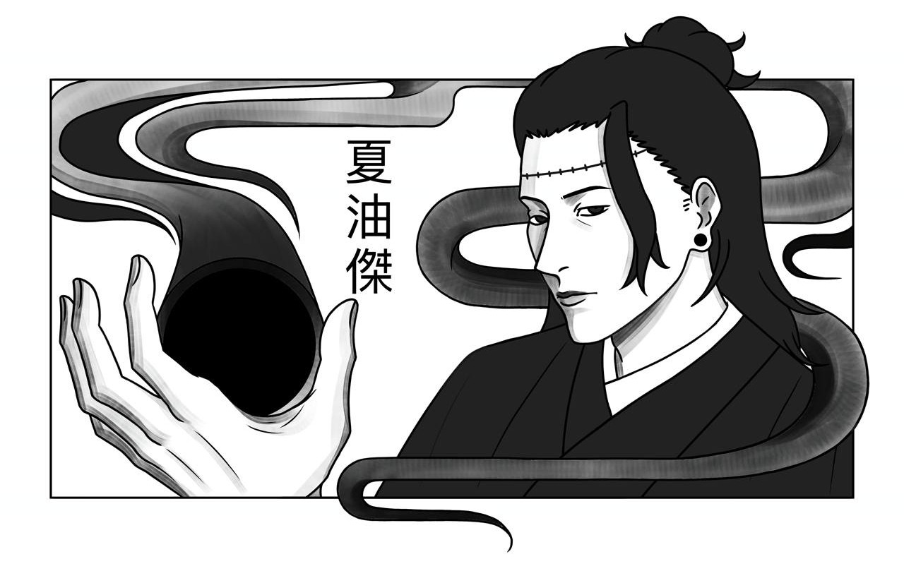
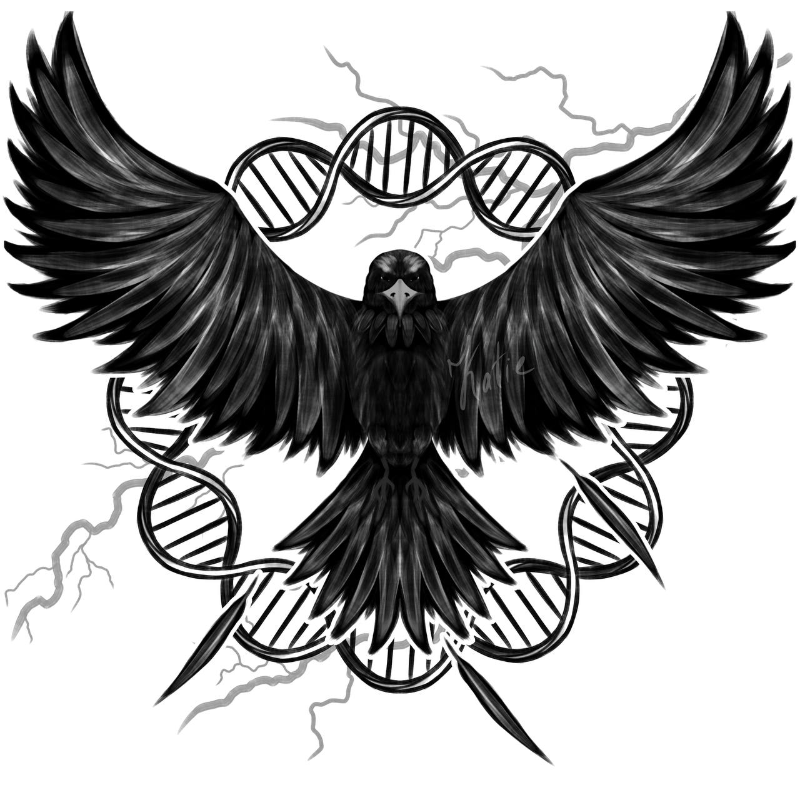
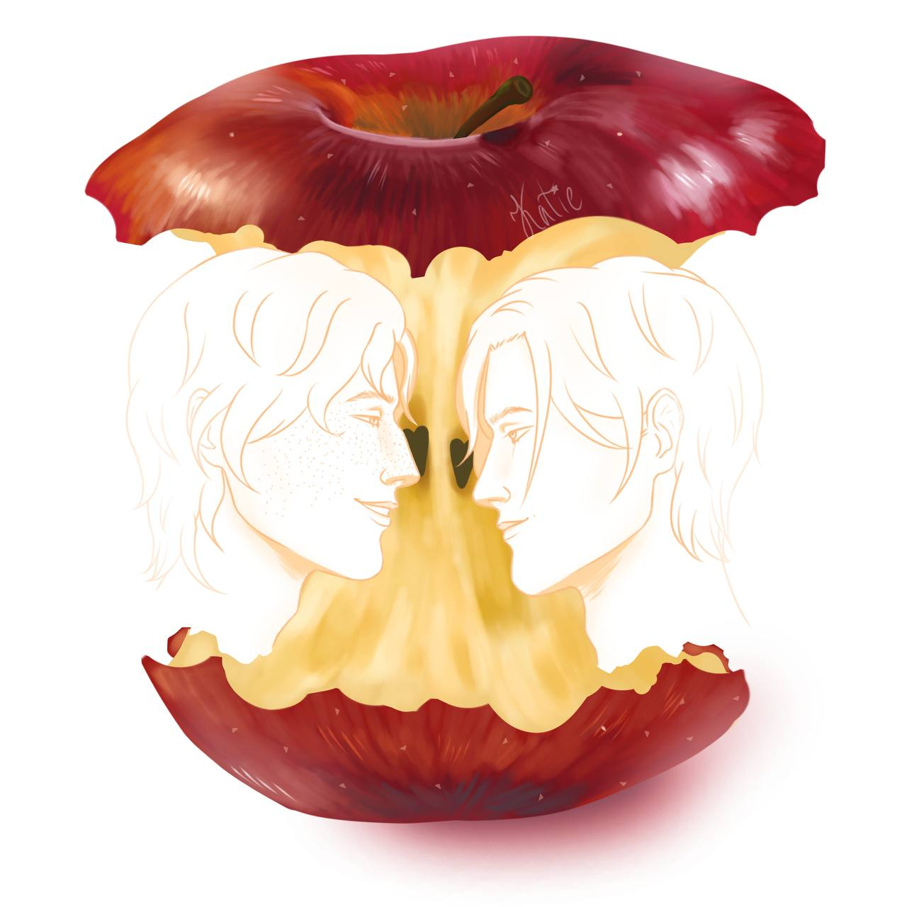
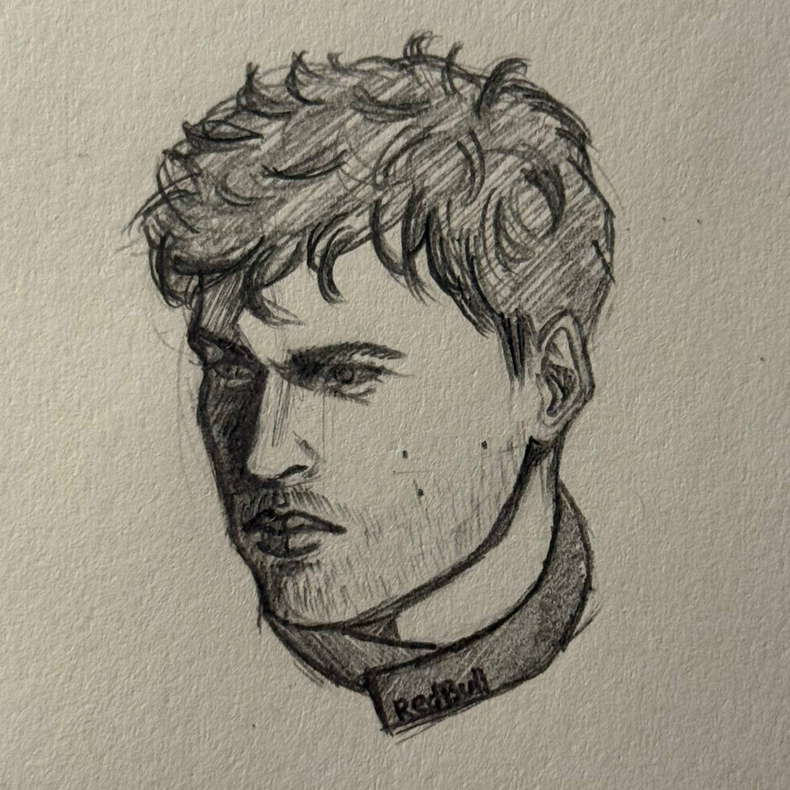
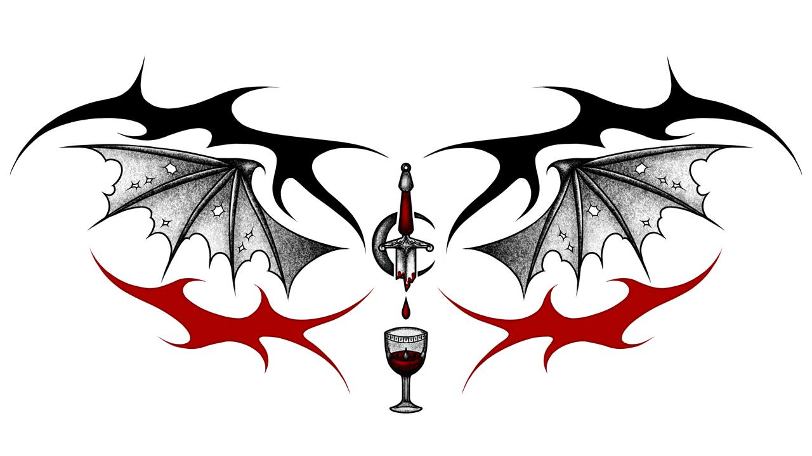
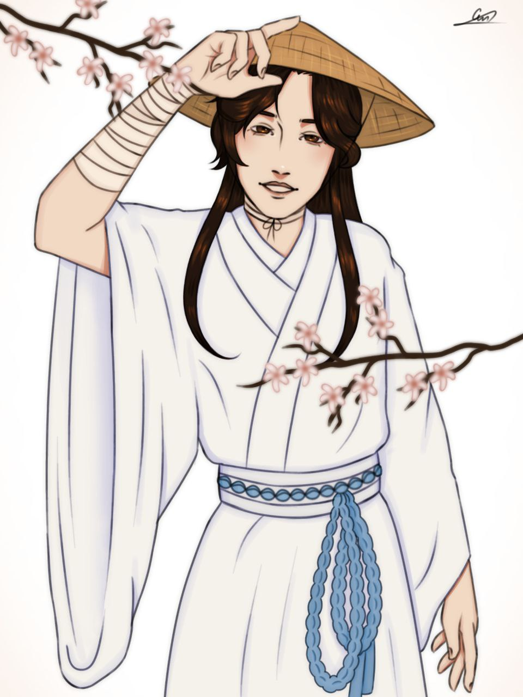
Трохи ближче до тих, хто живе у моїх малюнках.

Елегантний та стриманий молодий чоловік, який вміє зберігати внутрішню спокійність навіть у найважчих ситуаціях.
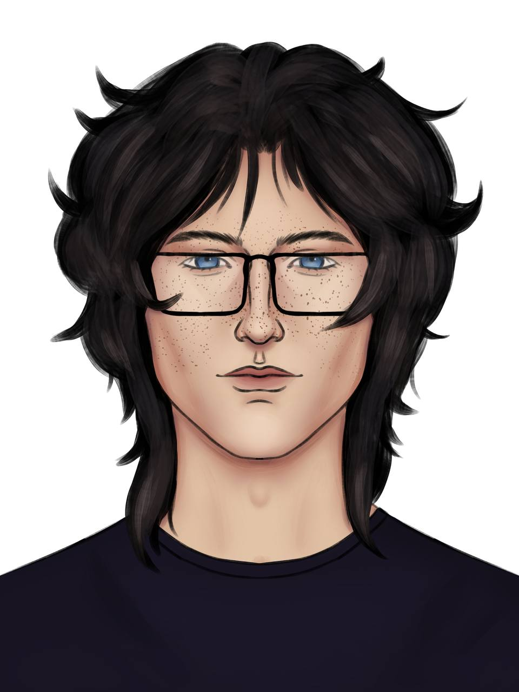
Кмітливий та винахідливий юнак, який воліє витрачати свій розум на пошук способів нічого не робити.
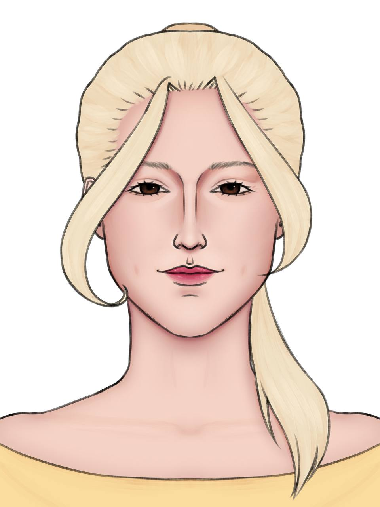
Розумна й життєрадісна дівчина, яка чудово поєднує допитливість із любов’ю до веселощів.
Пошук образу та настрою.
Композиція, силует і перші деталі.
Палітра, світло та тіні.
Уточнення деталей та завершення.
Є ідея для малюнка або просто хочеться поговорити про творчість?
@satijara